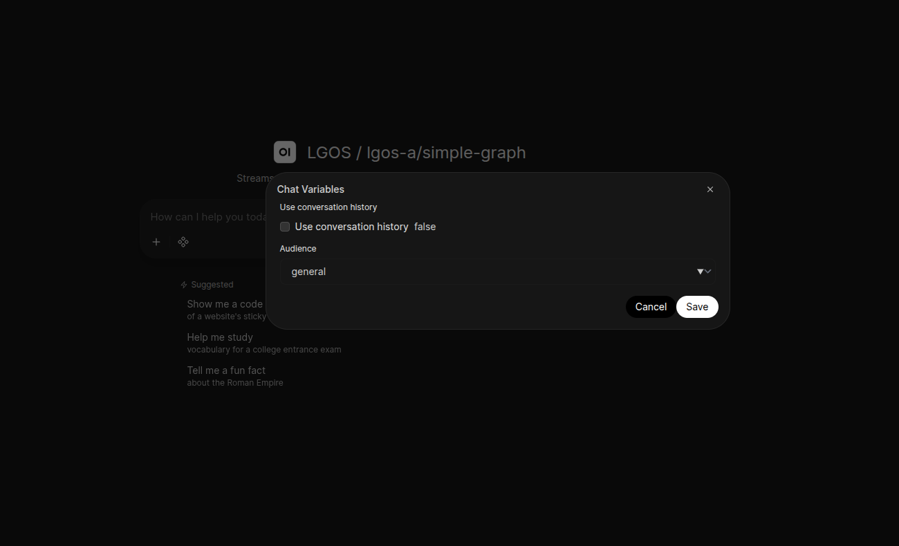
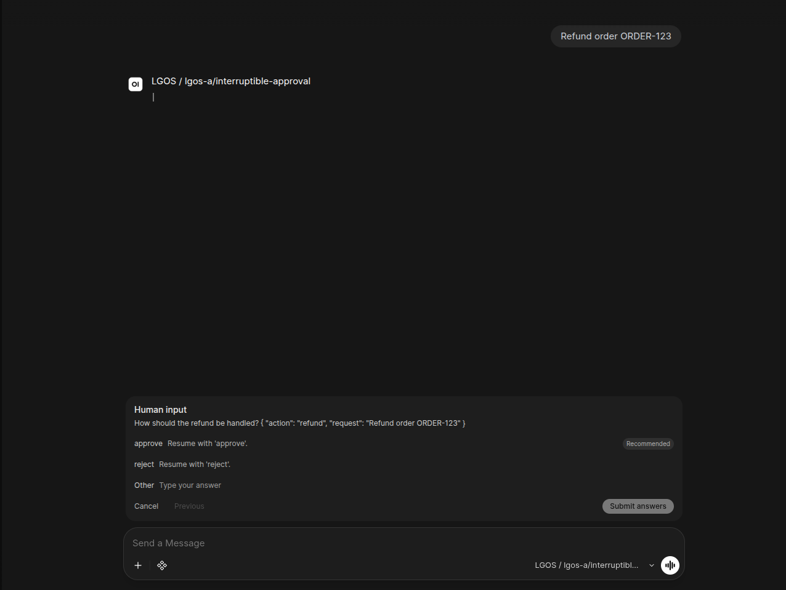

Open WebUI Integration¶
Start with UserValves Simple / simple-graph to try static per-user runtime
settings. Its small
uservalves_simple.py
Filter declares two settings and passes their values to the shared Responses
Pipe. Open WebUI owns the settings form and persistence.
The demo includes two Open WebUI Functions:
-
functions/uservalves_simple.pydemonstrates a fixedUserValvesschema for one graph, using Open WebUI's native Filter and UserValves support. -
demo/ui/openwebui/src/lgos_openwebui/functions/generic/is the modular source for a manifold Pipe for all registered graphs. It uses OpenAI Responses, graph-specific runtime settings, and the standard Files API, and adapts LGOS interrupts to Open WebUI's native question UI.
The sync command also generates one Open WebUI Workspace Model per discovered
LGOS model. Each Workspace Model wraps the corresponding manifold model and
declares its LGOS settings as native Chat Variables, which Open WebUI renders
as a per-chat form.
The generated server-tool models add fixed Package version and Web
search Chat Variable checkboxes. Generated advanced-graph models add only
the Web search checkbox; their gateway MCP tools are attached separately
from the discovered mcp_tools capability. The Pipe maps enabled tool boxes to
a name-only {"type":"custom","name":"lgos_package_version"} declaration or
{"type":"web_search"}; it keeps them out of metadata.lgos_settings. The
names are client constants, not discovered metadata. The server registry
determines which names execute in LGOS. Asking the advanced graph to remember or
save something triggers its note-review flow without a graph-specific setting.
The Pipe executes only native function_call items. Server custom calls and
searches have distinct native types and are already complete.
When lgos-a/simple-graph is available with valid metadata, sync also creates
the dedicated UserValves example over the same manifold base.
Server Tool Switches¶
Select LGOS / ... / server-tool, open the Chat Variables control beside the chat input, and enable Package version, Web search, or both. The checkboxes default to off and their values belong to the chat. LGOS executes the selected tools server-side without a client-tool continuation.
The OpenAI SDK in the pinned Open WebUI image omits
custom_tool_call_output from one generated response union. The Function adds
that existing SDK model to the affected response annotations at load time. The
shim is feature-detected, changes no installed package files, and becomes a
no-op when Open WebUI updates to an SDK containing the corrected union.
For LGOS / ... / advanced-graph, the same control contains Web search. Search is sent as a standard Responses tool. Note saving is an intent expressed in the user's message.
Simple Per-User Settings¶
After setup below, select UserValves Simple / simple-graph. Open
Controls → Valves, select Functions → UserValves Simple, and choose
use_history and audience. These preferences belong to the user and apply across chats
using this example. The field definitions are static; their values are editable.
The Filter adds those values to Open WebUI's request metadata as
lgos_settings. The shared Pipe sends them unchanged as
metadata.lgos_settings; LGOS validates and applies them.
The example has no Chat Variables form, so there is only one settings control.
The Filter is enabled only on the dedicated Workspace Model
lgos.uservalves_simple. Keep it attached there rather than enabling it globally.
It depends on the Generic Pipe for Responses transport. The generated
LGOS / ... models below demonstrate schema-driven per-chat settings.
Select one first-class gateway
Set OPENAI_GATEWAY_TYPE=litellm|bifrost once for both demo UIs. LiteLLM
uses managed Responses; Bifrost uses native Responses. Files also use the
selected gateway's normal route. Metadata comes from LiteLLM's native
/model/info or Bifrost's native /v1/models attributes. Neither
the Function nor the sync logic connects directly to LGOS.
Gateway MCP¶
Compose declares one Streamable HTTP connection, lgos-gateway, in Open
WebUI's TOOL_SERVER_CONNECTIONS environment variable. The sync command
attaches it to each generated Workspace Model whose gateway metadata
advertises mcp_tools. The Generic Pipe forwards the gateway tools from
Open WebUI's native __tools__ map through Responses and returns matching calls
to the native tool loop. mcp-postgres adds its fixed report allowlist at the
API boundary, while general-purpose graphs can use the gateway-authorized tool
catalog without knowing which MCP servers provide it.
The connection URL is OPENAI_GATEWAY_BASE_URL followed by /mcp, the
aggregate endpoint both bundled gateways serve. OPENAI_GATEWAY_API_KEY is the
connection's native bearer key. The same values drive model discovery, Responses, and Files. The gateway
credential determines which MCP tools can be discovered, while the downstream
DBHub token remains private to the gateway.
Open WebUI reads TOOL_SERVER_CONNECTIONS on every start. Compose disables
Open WebUI's persistent configuration, so changes made to the connection in
the admin settings last only until the container restarts.
Keep streaming enabled because Open WebUI's native tool middleware consumes the streamed tool-call shape. The current database example is PostgreSQL Through Native MCP; see it for the complete flow and security boundaries, and Open WebUI's official MCP documentation for its native server administration and access controls.
Setup¶
Start the pinned official Open WebUI slim image unchanged:
Slim image
The demo pins the official Open WebUI slim image. It omits local embedding, reranking, speech, and document-extraction models, the headless browser, and keyless DDGS search. The demo uses none of them: speech runs through the gateway, uploads stay raw for the central Files API, and graphs own retrieval and web search. Open WebUI's own Knowledge and Memory features need PostgreSQL with pgvector on this image and are not configured. Deleting a stored Open WebUI file therefore removes it but reports an error while cleaning up the absent vector index.
For independently started components, first sync LGOS model metadata when using LiteLLM. Then run the locked synchronization project on the host:
The command discovers models through DEMO_GATEWAY_HOST_URL with the same
credential as the Open WebUI runtime. For a standalone Open WebUI deployment,
run uv run --directory demo/ui/openwebui --locked lgos-openwebui-sync from an
environment where DEMO_OPENWEBUI_URL and the gateway are reachable; without
DEMO_GATEWAY_HOST_URL, discovery uses OPENAI_GATEWAY_BASE_URL. Configure
that deployment's lgos-gateway MCP connection as the Compose service does.
The full-stack just demo/compose [--dev] [--otel] variants handle
synchronization automatically after their dependencies are healthy.
The sync command signs in through /api/v1/auths/signin and reads LGOS metadata
from the selected gateway before changing Functions or Workspace Models.
An unavailable or malformed catalog stops the command without modifying them.
It then updates the bundled Functions, sets the Generic Function's gateway
valves, and bulk-imports each generated Workspace Model with an active, public,
hidden override for its manifold base. Run it again after changing a Function,
a gateway setting, the configured model catalog, or a graph's client settings
schema.
Generated Workspace Model descriptions come from the selected graph's required
GraphConfig.description. The sync marks a model as Limited functionality
when the API omits a description.
LiteLLM's managed /v1/models response is not the UI catalog. Both the Generic
Pipe and Workspace Model sync read native GET /model/info using their
configured gateway key. Entries with model_info.lgos supply descriptions,
features, and complete settings; model_name remains the inference ID.
No provider allowlist, per-provider catalog URL, or LGOS fallback is used.
Bifrost uses native /v1/models for discovery. The Workspace Model sync decodes
additional_attributes.lgos, a JSON string containing descriptions, features,
and detailed client-settings schemas. Bifrost catalog
sync publishes these before Open WebUI
starts. After graph changes, rerun just demo/sync-bifrost [--dev] followed by
just demo/sync-openwebui. Inference uses the selected gateway's normal
Responses route.
After importing the current catalog, sync deletes obsolete generated lgos.*
Workspace Models and generic.* base visibility records. It does not delete
unrelated user-managed Functions or Workspace Models. New generated
Workspace Models are public; later syncs preserve their access grants and
active state. The sync owns the generated bases' hidden, public, and active
state.
The command installs the two Functions under
demo/ui/openwebui/src/lgos_openwebui/functions/: generic and
uservalves_simple. The Generic Function's function.py holds its
frontmatter, and its modules are flattened into one executable source string at
sync time because Open WebUI stores each Function directly in its database.
The shared demo/.env supplies the sync credentials and gateway selection. See
sync settings for their purposes. Set
secrets in the environment rather than passing them on the command line.
Choose a generated entry such as LGOS / lgos-a/simple-graph to use Chat
Variables. Its Workspace Model ID is lgos.lgos-a/simple-graph, and its base
model is generic.lgos-a/simple-graph. The raw Generic / ... manifold entry
remains active and public but is hidden from the chat selector, following Open
WebUI's
curated-interface guidance.
The sync writes OPENAI_GATEWAY_TYPE, OPENAI_GATEWAY_BASE_URL, and
OPENAI_GATEWAY_API_KEY from demo/.env into the Generic Function's valves
through Open WebUI's Functions API; the Function reads no environment
variables. OPENAI_GATEWAY_BASE_URL must be the root Open WebUI reaches, and
the key must be issued by the selected gateway. Each sync replaces those three
valves and keeps the others, such as an admin-set OPENAI_API_TIMEOUT.
Restarting Open WebUI alone refreshes only its MCP and speech settings, so
re-run the sync after changing the gateway key or URL. Compose enables Open
WebUI's
valve encryption
with DEMO_OPENWEBUI_SECRET_KEY. Changing that secret makes every stored
valve unreadable, so Open WebUI resets them, including admin-set values and
users' UserValves; re-run the sync to restore the gateway valves and set the
others again.
LiteLLM sends the catalog's model_name unchanged for managed routing. Bifrost also
receives the provider-qualified catalog ID unchanged on native Responses and
selects the provider from its prefix.
Open WebUI stores Function code in its database, so a bind mount of the Python
file does not update it.
File Input¶
Generated models enable Open WebUI's native file-upload control only when the
graph advertises file_inputs. Select LGOS / lgos-a/file-input in the bundled
demo to process an attachment. In the pinned release,
__metadata__["user_message"] lists the files attached to the message that
started this turn, images included. The Generic Function reads each file's
original bytes through Open WebUI's authenticated
/api/v1/files/{id}/content endpoint with the caller's credentials, uploads
them with purpose="user_data", and appends the returned OpenAI file_id to
the message. It never reuploads historical chat attachments or moves them to
the latest message. Images use input_file.file_id too; the current LGOS
Responses subset does not accept input_image items.
This local file bridge uses the HTTPX shipped by the pinned Open WebUI runtime; it will move to HTTPX2 when Open WebUI adopts OpenAI v3.
The generated Workspace Model is the upload-capability boundary. The raw manifold entry is intended for diagnostics and does not add a second remote metadata check to every Responses request.
Compose sends file uploads through the selected gateway's normal /v1 Files
route. Bifrost assigns the request to lgos-files; LiteLLM assigns it to
litellm_proxy. Both providers target the central Files API.
The Compose service mounts a small ASGI wrapper that forces process=false on
Open WebUI's native file-upload endpoint. Open WebUI therefore stores the
original bytes without extracting or embedding their content before the Pipe
runs. The generated Workspace Model also disables chat-time file-context
retrieval and its built-in file tools while preserving other built-in tools,
including ask_user.
Open WebUI still owns its raw upload copy because its native attachment UI
requires an Open WebUI file record. The central Files API is the only processing
source of truth and owns the separate inference copy referenced by file_id.
The policy applies to every file uploaded through this demo Open WebUI instance,
not only to generated LGOS models.
Temporary upstream workaround
The pinned Open WebUI release always requests processing for non-image
chat uploads before a Pipe or Filter can run. The wrapper exists only to
change that upload request to process=false; a Filter can control later
retrieval but cannot prevent the earlier extraction.
Remove upload_policy.py, its Compose mount, and the custom Uvicorn command
when the pinned Open WebUI release provides native per-model control for raw
uploads. See the related
upstream issue and
the
unmerged File Processing capability PR.
Voice¶
Compose configures Open WebUI's native
speech-to-text and text-to-speech
with its openai engines. Both engines call the selected gateway's /v1 audio
routes with OPENAI_GATEWAY_API_KEY, DEMO_AUDIO_STT_MODEL,
DEMO_AUDIO_TTS_MODEL, and DEMO_AUDIO_TTS_VOICE. The Pipe and LGOS stay
text-only.
- Voice mode, the headphones button in an empty chat input, is the hands-free loop. Open WebUI ends a turn after two seconds of silence, transcribes it, and submits the text to the selected model as a normal chat message. It then speaks the answer sentence by sentence.
- The microphone button dictates into the input box for editing before sending.
- Read aloud under an answer speaks it on demand.
Open WebUI always shows these controls to admins, including the demo
account. USER_PERMISSIONS_CHAT_STT, USER_PERMISSIONS_CHAT_TTS, and
USER_PERMISSIONS_CHAT_CALL hide them only from regular users. Without working
speech models, the controls fail with Open WebUI's own error toasts.
In voice mode, Open WebUI adds its own concise-voice-assistant system prompt,
which the Pipe forwards to LGOS like any other system message. Set
ENABLE_VOICE_MODE_PROMPT=false on the Open WebUI service to send only the
transcript.
Set the audio URLs explicitly
Open WebUI does not derive its audio base URLs from any other
connection setting; without AUDIO_*_OPENAI_API_BASE_URL, speech goes to
api.openai.com. The slim image carries no local Whisper engine or voices,
so both engines must use an external service.
Limited Functionality¶
Every generated model remains visible when its native detail response
lacks the required lgos extension. Its name and description
say Limited functionality. Standard assistant text may still work; runtime
settings, file-upload controls, and gateway tools are not assumed.
Runtime Settings¶
LGOS remains the schema and default-value source of truth. The sync command uses the same deliberately small JSON Schema subset as the Chainlit demo:
- boolean with a boolean default becomes a checkbox;
- string enum with a valid string default becomes a selector;
- string with a string default becomes a text input;
- integer with an integer default becomes a number input, keeping its
minimumandmaximumas bounds; - nested objects, arrays, non-integer numbers, and unsupported schemas are omitted.
Open WebUI's declaration syntax cannot represent text containing ", \, or
}, and a line break would hide the end of the rendered declarations from the
Pipe. A string default or option with one of these characters omits its
setting; such a title falls back to a label derived from the setting name.
Open WebUI stores Chat Variable values on the conversation. Select a generated LGOS model, then use the Chat Variables control beside the message input. Since LGOS supplies defaults for every setting, the form does not block the first message merely to confirm them.

Runtime settings synchronized from lgos-a/simple-graph and rendered as
native Open WebUI Chat Variables.
When a chat has values, the Pipe serializes Open WebUI's generated Chat
Variables and sends them as
metadata.lgos_settings. A chat keeps the values of every model selected in
it, so the Pipe sends only the variables the selected Workspace Model declares.
Open WebUI keeps an untouched declared default as
text, so the Pipe restores checkbox and number values to JSON booleans and
integers. It omits empty values so LGOS applies its defaults, and LGOS performs
the authoritative runtime validation.
Models advertising background also receive an opt-in Run in
background checkbox. The Pipe keeps this client-owned value out of
lgos_settings, polls the non-streaming Response, and publishes native status
events until the normal answer renderer takes over. Interrupt answers follow
the same checkbox.
The shared Pipe maps Open WebUI's stable chat_id to
metadata.conversation_id on every Responses request, including the UserValves example.
Langfuse can therefore group the
chat's independent request traces into one session, while Open WebUI continues
to own and resend the conversation history. The generic Pipe also forwards the
opaque Open WebUI user ID as the standard OpenAI user; persistent-plot-agent uses
both values to scope its chart document. Interrupt resumes reuse the same
conversation value. See the
persistent plot agent ownership flow
for the API Store and Open WebUI persistence boundaries.
The Workspace Model declarations are a generated projection, not a second
configuration source. Open WebUI does not fetch a remote schema when the model
selector changes, so rerun just demo/sync-openwebui after an LGOS
schema change. Model selection then switches among the already-synchronized
native forms.
Pinned Open WebUI contract
The pinned Open WebUI release derives the Chat Variables form only from
{{chat.variables.*}} declarations in a Workspace Model's system prompt.
The sync writes a declaration-only system prompt between
<lgos-chat-variables> delimiter lines. Before a Pipe runs, Open WebUI
renders it with the chat's values and prepends the result to the first
system message. The Generic Pipe removes that leading block, including the
copy each native tool-loop continuation adds, and keeps any chat-level
system prompt that follows. Settings therefore reach LGOS only as metadata,
never as graph prompt content. This behavior is version-specific; rerun the
Open WebUI sync and model tests before changing the image pin.
Streaming, Status, And Citations¶
The general manifold Pipe uses OpenAI Responses for every model. The SDK stream
manager owns event accumulation and supplies the terminal Response; the Pipe
adapts final-answer deltas to Open WebUI's native stream interface and maps
completed commentary messages to native status history. It translates standard
answer URL annotations from the completed Response into persistent native
source events, with each cited span as the source excerpt. The SDK owns the
complete annotation objects; the Pipe does not rebuild them from deltas.
Both modes exclude commentary and accept answer messages without the optional
phase field. Transcript replay labels assistant answers as final_answer and
preserves explicit phase values, following OpenAI's
assistant phase guidance.
Inline citation markers remain part of assistant content.
Status descriptions remain active while the Responses/tool loop runs and are
finalized when it completes or stops, using Open WebUI's native
status events.
Both response modes display native refusals. Failed and incomplete streaming
events are handled directly so their reason remains visible; incomplete
responses never trigger client functions.
The persistent plot graph returns a standard display_file function call. The
Pipe downloads the Plotly JSON through the OpenAI Files API and embeds the
figure in a small HTML document. The browser renders it with the native
Plotly.newPlot
API; the Open WebUI backend needs no Python Plotly package.
It emits the native persistent embeds event
to render an interactive chart in Open WebUI's sandboxed iframe, then returns
the matching function_call_output before requesting the final answer.
The HTML uses Plotly's versioned CDN script, so browsers must be able to reach
cdn.plot.ly. Open WebUI saves the embed with the message for chat reloads;
HTML and chart bytes stay out of the upstream model transcript. Image files
still use authenticated Open WebUI file storage and the native files event. Each continuation retains the original input, including instructions
and file references, then appends complete Response output items and matching
tool results. Final-answer text from every call is retained in both modes.
Server custom call/result items have already been executed by LGOS; the Pipe does not execute them or send another result. The chat displays their final assistant answer.
The Pipe returns plain text for non-streaming answers and yields Chat
Completions chunk objects for streamed text. Open WebUI JSON-encodes these
chunks, so literal text such as data: [DONE] cannot be mistaken for a stream
event.
Open WebUI owns stream termination. The native ask_user bridge also uses the
host's tool-call dictionaries to persist question cards and submit answers.
These shapes belong to the UI boundary; inference uses Responses exclusively.
See the pinned
Pipe host.
Shared prompts and graph behavior are documented under
Events And Citations and
Persistent Plot Agent.
Interrupt Input¶
The Pipe translates each LGOS lgos_interrupt batch into one built-in
Open WebUI ask_user call. Open WebUI persists that pending call on the saved
assistant message, so its native question card survives a page reload. The
ask_user call ID carries the paused Response ID, and each question ID is an
LGOS interrupt call ID; answering the card needs no adapter database or live
socket callback.
The deliberately small UI profile is an object containing a non-empty
question, two or three unique string choices, and optional boolean
allow_other. When allow_other is true, Open WebUI adds its free-form
Other input. This is a demo-client presentation convention, not an LGOS
payload restriction. Responses carries each resume value as a string: the
chosen option's label or the free-form text. Open WebUI trims option labels and
truncates them to 80 characters, so the Pipe rejects choices it would change.
The advanced graph includes exact note bytes in its review payload after the user explicitly asks to save something. Open WebUI truncates question text to 500 characters, so when the question and its details exceed that limit, the Pipe renders them in full above the question card. Knowledge citations remain ordinary answer text with filenames and provider file IDs. The Pipe does not add a knowledge-base selector or bridge the demo S3 Files namespace.
After the user answers, the Pipe sends the Response ID from the card as
previous_response_id with one function_call_output item per answered
question. LGOS rejects the resume unless the answers cover its complete pending
interrupt set. One native ask_user
call can contain one to three questions, matching Open WebUI's built-in limit.
LGOS itself remains generic and can expose larger atomic batches to clients that
support them.
Saved chats restore pending input
Open WebUI's built-in ask_user persistence requires a saved chat. Refreshing
the page restores the unanswered card; the LangGraph checkpoint remains
pending until the answer reaches LGOS. Cancel ends the Open WebUI turn
without resuming the graph, so its checkpoint remains pending until the demo
API's expiry deletes it.
The refund demo offers approve, reject, and a custom response. Approval executes the simulated refund and notification, rejection stops the workflow, and custom text is returned as reviewer feedback without executing an action.

Open WebUI renders the interrupt as a native ask_user card with choices and
an optional free-form answer.
LGOS still owns the pending graph checkpoint and its retention policy. See Interruptible Human Review for server-side checkpoint retention.
See the core citation contract and interrupt protocol for the API behavior beneath the adapter.